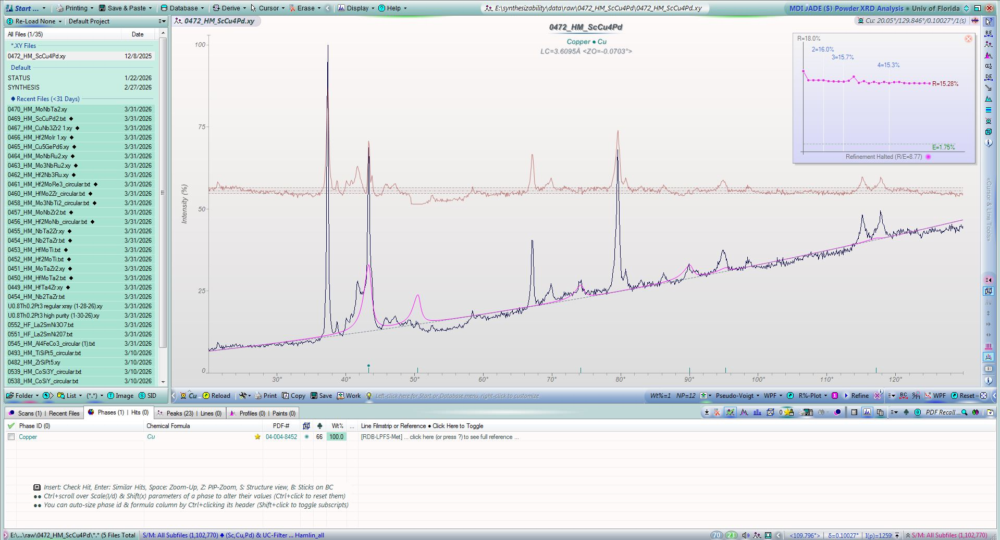
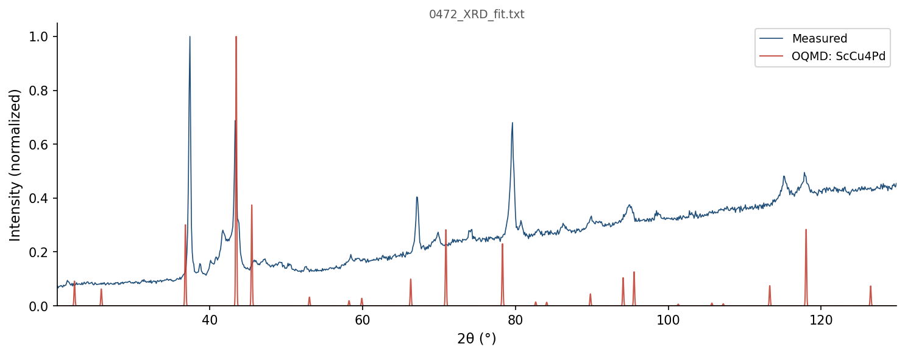
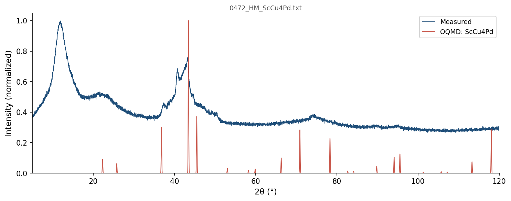

| Element | Expected (mol frac) | Measured (mol frac) | Δ (mol frac) | Δ (%) |
|---|---|---|---|---|
| Cu | 0.6667 | 0.6664 | -0.0002 | -0.02% |
| Pd | 0.1667 | 0.1667 | -0.0000 | -0.00% |
| Sc | 0.1667 | 0.1669 | +0.0002 | +0.02% |
352 OQMD entries in the Cu-Pd-Sc element system (27 on hull, 51 ICSD-tagged). OQMD: negative = below hull (stable). Sorted most stable first.
| Composition | Stability (meV/atom) | ΔE (meV/atom) | ICSD | Space | Entry | CIF |
|---|---|---|---|---|---|---|
Pd3Sc1 |
-72 | -854.4 | ✓ | Pd-Sc | 17945 | CIF |
Pd1Sc1 |
-68 | -908.2 | Pd-Sc | 307352 | CIF | |
Cu1Pd5Sc2 |
-49 | -822.9 | Cu-Pd-Sc | 2147370 | CIF | |
Cu1Sc1 |
-49 | -278.8 | Cu-Sc | 306670 | CIF | |
Pd1Sc2 |
-32 | -664.9 | ✓ | Pd-Sc | 2053108 | CIF |
Cu1Pd1 |
-31 | -126.7 | Cu-Pd | 1338922 | CIF | |
Cu4Pd1Sc1 |
-24 | -344.0 | Cu-Pd-Sc | 1991578 | CIF | |
Cu2Sc1 |
-21 | -257.7 | Cu-Sc | 1895344 | CIF | |
Cu1Sc2 |
-16 | -202.1 | Cu-Sc | 1365001 | CIF | |
Cu3Pd1 |
-15 | -107.8 | ✓ | Cu-Pd | 18547 | CIF |
Cu51Sc14 |
-13 | -206.7 | Cu-Sc | 2141573 | CIF | |
Pd8Sc1 |
-12 | -413.7 | Pd-Sc | 1370788 | CIF | |
Pd5Sc1 |
-8 | -597.7 | Pd-Sc | 1364970 | CIF | |
Cu5Sc1 |
-7 | -167.4 | Cu-Sc | 1369141 | CIF | |
Pd7Sc3 |
-6 | -893.5 | Pd-Sc | 1977873 | CIF | |
Pd4Sc3 |
-5 | -914.7 | Pd-Sc | 2132047 | CIF | |
Cu1Pd7 |
-4 | -41.3 | Cu-Pd | 1378051 | CIF | |
Pd5Sc3 |
-4 | -910.5 | ✓ | Pd-Sc | 2021703 | CIF |
Cu1Pd3 |
-4 | -73.9 | ✓ | Cu-Pd | 2029793 | CIF |
Pd3Sc10 |
-4 | -464.1 | Pd-Sc | 2136435 | CIF | |
Cu1Pd2Sc3 |
-3 | -701.4 | Cu-Pd-Sc | 1374854 | CIF | |
Pd11Sc5 |
+0 | -896.4 | Pd-Sc | 2132181 | CIF | |
Cu1 |
+0 | 0.0 | Cu | 2072241 | CIF | |
Cu1 |
+0 | 0.0 | Cu | 2066481 | CIF | |
Cu1 |
+0 | 0.0 | ✓ | Cu | 635950 | CIF |
Pd1 |
+0 | 0.0 | Pd | 1214557 | CIF | |
Sc1 |
+0 | 0.0 | ✓ | Sc | 8146 | CIF |
Cu1Pd3 |
+0 | -73.9 | Cu-Pd | 349719 | CIF | |
Cu1 |
+0 | 0.1 | Cu | 2066479 | CIF | |
Cu1Pd1 |
+0 | -126.5 | Cu-Pd | 307768 | CIF | |
Cu4Pd1Sc1 |
+0 | -343.8 | Cu-Pd-Sc | 1888746 | CIF | |
Pd4Sc3 |
+0 | -914.4 | Pd-Sc | 1979262 | CIF | |
Cu1 |
+0 | 0.3 | ✓ | Cu | 592441 | CIF |
Cu1 |
+0 | 0.3 | ✓ | Cu | 593869 | CIF |
Cu1 |
+0 | 0.3 | ✓ | Cu | 598513 | CIF |
Cu1Pd1 |
+0 | -126.3 | ✓ | Cu-Pd | 22410 | CIF |
Cu1 |
+0 | 0.4 | ✓ | Cu | 594520 | CIF |
Cu1Pd3 |
+0 | -73.5 | Cu-Pd | 1520900 | CIF | |
Cu7Pd3 |
+0 | -111.2 | Cu-Pd | 1973691 | CIF | |
Cu1 |
+0 | 0.5 | ✓ | Cu | 594301 | CIF |
Cu1Sc1 |
+0 | -278.4 | ✓ | Cu-Sc | 88926 | CIF |
Cu1 |
+0 | 0.5 | Cu | 1214520 | CIF | |
Cu1 |
+1 | 0.5 | ✓ | Cu | 594302 | CIF |
Pd1Sc1 |
+1 | -907.4 | ✓ | Pd-Sc | 17944 | CIF |
Cu1 |
+1 | 0.8 | ✓ | Cu | 594518 | CIF |
Cu1 |
+1 | 0.8 | ✓ | Cu | 594517 | CIF |
Cu2Sc1 |
+1 | -256.9 | ✓ | Cu-Sc | 29783 | CIF |
Cu1 |
+1 | 0.9 | ✓ | Cu | 594519 | CIF |
Cu1 |
+1 | 1.1 | Cu | 2072238 | CIF | |
Cu1 |
+1 | 1.3 | Cu | 2072237 | CIF | |
Cu1 |
+1 | 1.3 | Cu | 2074487 | CIF | |
Pd1 |
+1 | 1.5 | ✓ | Pd | 676153 | CIF |
Sc1 |
+1 | 1.5 | ✓ | Sc | 106122 | CIF |
Cu1 |
+2 | 1.6 | Cu | 2072239 | CIF | |
Cu1 |
+2 | 1.7 | Cu | 2072235 | CIF | |
Sc1 |
+2 | 1.7 | ✓ | Sc | 106116 | CIF |
Sc1 |
+2 | 1.7 | ✓ | Sc | 106124 | CIF |
Cu1 |
+2 | 2.2 | Cu | 2072240 | CIF | |
Cu1Sc1 |
+2 | -276.5 | ✓ | Cu-Sc | 29784 | CIF |
Cu1 |
+2 | 2.5 | Cu | 2072236 | CIF | |
Cu1 |
+3 | 2.7 | Cu | 2072225 | CIF | |
Pd1 |
+3 | 2.7 | Pd | 1215715 | CIF | |
Cu1 |
+3 | 2.7 | Cu | 2072242 | CIF | |
Sc1 |
+3 | 2.8 | ✓ | Sc | 106119 | CIF |
Cu1 |
+3 | 2.8 | Cu | 2072249 | CIF | |
Cu1 |
+3 | 2.8 | Cu | 2072243 | CIF | |
Cu1Sc1 |
+3 | -276.0 | Cu-Sc | 338212 | CIF | |
Cu1 |
+3 | 2.9 | Cu | 1215678 | CIF | |
Cu3Pd1 |
+3 | -104.9 | ✓ | Cu-Pd | 17159 | CIF |
Cu1 |
+3 | 3.0 | Cu | 2072244 | CIF | |
Sc1 |
+3 | 3.0 | Sc | 1791926 | CIF | |
Cu2Pd1 |
+3 | -110.8 | Cu-Pd | 1986247 | CIF | |
Cu3Pd1 |
+4 | -104.3 | ✓ | Cu-Pd | 17158 | CIF |
Cu3Pd1 |
+4 | -104.3 | Cu-Pd | 349775 | CIF | |
Cu1 |
+4 | 3.6 | Cu | 2072245 | CIF | |
Cu1 |
+4 | 4.0 | Cu | 2072248 | CIF | |
Cu1 |
+4 | 4.3 | Cu | 2072227 | CIF | |
Cu1 |
+5 | 4.6 | Cu | 2072247 | CIF | |
Cu1 |
+5 | 4.7 | Cu | 2072228 | CIF | |
Cu1Pd1Sc2 |
+5 | -591.0 | Cu-Pd-Sc | 363099 | CIF | |
Cu8Pd1 |
+5 | -43.1 | Cu-Pd | 1950082 | CIF | |
Cu1 |
+6 | 5.6 | Cu | 1215411 | CIF | |
Cu1 |
+6 | 5.9 | Cu | 2072250 | CIF | |
Cu1 |
+6 | 6.1 | Cu | 2072229 | CIF | |
Cu1 |
+6 | 6.2 | Cu | 1216034 | CIF | |
Sc1 |
+7 | 6.6 | Sc | 1215369 | CIF | |
Cu1 |
+7 | 6.9 | Cu | 2072232 | CIF | |
Cu1Pd3 |
+7 | -66.6 | Cu-Pd | 2082257 | CIF | |
Cu1 |
+8 | 7.5 | Cu | 1215321 | CIF | |
Cu1 |
+8 | 7.6 | Cu | 2072230 | CIF | |
Pd7Sc1 |
+8 | -451.7 | Pd-Sc | 1951173 | CIF | |
Cu1Pd1 |
+8 | -118.6 | Cu-Pd | 1340144 | CIF | |
Cu1 |
+8 | 8.3 | Cu | 1520484 | CIF | |
Cu1 |
+8 | 8.4 | Cu | 2072252 | CIF | |
Cu1 |
+9 | 9.0 | Cu | 2072251 | CIF | |
Cu1 |
+9 | 9.0 | Cu | 2072233 | CIF | |
Pd2Sc1 |
+10 | -890.7 | Pd-Sc | 1339201 | CIF | |
Cu1 |
+11 | 11.0 | Cu | 2072234 | CIF | |
Cu1Pd1 |
+11 | -115.3 | Cu-Pd | 1339769 | CIF | |
Cu1Pd1 |
+12 | -114.8 | Cu-Pd | 1820964 | CIF | |
Cu1 |
+13 | 12.6 | Cu | 2072231 | CIF | |
Pd1Sc1 |
+13 | -895.4 | Pd-Sc | 1520951 | CIF | |
Cu1 |
+13 | 12.8 | Cu | 2072253 | CIF | |
Cu1 |
+13 | 13.1 | Cu | 2072226 | CIF | |
Cu1Pd3 |
+14 | -59.9 | Cu-Pd | 304205 | CIF | |
Cu4Pd1 |
+14 | -72.3 | ✓ | Cu-Pd | 17161 | CIF |
Pd1 |
+14 | 14.1 | Pd | 1215448 | CIF | |
Cu1 |
+14 | 14.3 | Cu | 2072254 | CIF | |
Cu1Pd3 |
+14 | -59.5 | Cu-Pd | 2080550 | CIF | |
Pd3Sc1 |
+15 | -839.9 | Pd-Sc | 342956 | CIF | |
Cu3Pd1 |
+16 | -91.8 | ✓ | Cu-Pd | 2034577 | CIF |
Cu3Sc1 |
+16 | -205.4 | Cu-Sc | 1520482 | CIF | |
Pd5Sc1 |
+16 | -581.3 | Pd-Sc | 1450652 | CIF | |
Cu3Sc1 |
+17 | -205.1 | ✓ | Cu-Sc | 2034579 | CIF |
Pd1Sc1 |
+17 | -891.5 | Pd-Sc | 338894 | CIF | |
Cu1Pd2Sc1 |
+18 | -692.6 | Cu-Pd-Sc | 1370365 | CIF | |
Pd1 |
+18 | 18.2 | Pd | 1216074 | CIF | |
Cu1Pd1 |
+18 | -108.4 | Cu-Pd | 2083223 | CIF | |
Cu3Pd5 |
+19 | -81.7 | Cu-Pd | 1338658 | CIF | |
Cu1 |
+19 | 18.7 | Cu | 1215232 | CIF | |
Pd1Sc2 |
+19 | -645.9 | Pd-Sc | 1375777 | CIF | |
Cu1 |
+19 | 19.1 | Cu | 2072246 | CIF | |
Cu4Sc1 |
+19 | -175.1 | Cu-Sc | 1435542 | CIF | |
Sc1 |
+20 | 19.8 | Sc | 1215280 | CIF | |
Cu3Pd1 |
+20 | -87.9 | ✓ | Cu-Pd | 17160 | CIF |
Pd5Sc3 |
+22 | -888.9 | Pd-Sc | 1338657 | CIF | |
Cu1Pd3 |
+22 | -51.5 | Cu-Pd | 325233 | CIF | |
Sc1 |
+25 | 24.9 | Sc | 1216085 | CIF | |
Cu1Pd3 |
+26 | -48.0 | ✓ | Cu-Pd | 2034612 | CIF |
Cu7Pd6 |
+29 | -95.0 | Cu-Pd | 1339222 | CIF | |
Cu1Pd1 |
+29 | -97.5 | Cu-Pd | 328852 | CIF | |
Pd1 |
+30 | 29.7 | Pd | 1215804 | CIF | |
Sc1 |
+32 | 31.6 | Sc | 1215459 | CIF | |
Pd1 |
+32 | 31.6 | Pd | 1215358 | CIF | |
Cu3Sc1 |
+33 | -188.9 | Cu-Sc | 1338790 | CIF | |
Cu3Pd1 |
+35 | -73.3 | Cu-Pd | 325289 | CIF | |
Pd3Sc1 |
+35 | -819.8 | Pd-Sc | 318470 | CIF | |
Cu1 |
+35 | 35.1 | ✓ | Cu | 637373 | CIF |
Cu1 |
+35 | 35.5 | Cu | 1522153 | CIF | |
Cu1 |
+35 | 35.5 | Cu | 1522150 | CIF | |
Cu1 |
+36 | 36.3 | Cu | 1214609 | CIF | |
Cu3Pd1 |
+37 | -71.1 | Cu-Pd | 2080686 | CIF | |
Cu3Pd1 |
+37 | -71.1 | Cu-Pd | 2121016 | CIF | |
Cu1 |
+37 | 37.0 | Cu | 1215143 | CIF | |
Cu1Pd1 |
+38 | -88.2 | Cu-Pd | 2082107 | CIF | |
Cu1Pd1 |
+40 | -87.1 | Cu-Pd | 2080407 | CIF | |
Pd1 |
+41 | 40.6 | Pd | 1522168 | CIF | |
Pd1 |
+41 | 40.9 | ✓ | Pd | 2029797 | CIF |
Pd1 |
+43 | 42.8 | Pd | 1215180 | CIF | |
Pd1 |
+43 | 43.4 | Pd | 1215269 | CIF | |
Cu3Pd1 |
+45 | -62.4 | Cu-Pd | 304149 | CIF | |
Cu1Pd1 |
+46 | -81.1 | Cu-Pd | 1229175 | CIF | |
Cu2Pd1 |
+46 | -68.5 | Cu-Pd | 1591187 | CIF | |
Pd1 |
+46 | 46.0 | Pd | 1214646 | CIF | |
Sc1 |
+48 | 48.0 | ✓ | Sc | 9275 | CIF |
Sc1 |
+50 | 50.5 | Sc | 1214568 | CIF | |
Sc1 |
+53 | 53.0 | Sc | 1215726 | CIF | |
Cu2Sc1 |
+53 | -204.6 | Cu-Sc | 1340665 | CIF | |
Sc1 |
+54 | 53.9 | ✓ | Sc | 676146 | CIF |
Cu1 |
+55 | 54.9 | Cu | 2054435 | CIF | |
Sc1 |
+56 | 55.6 | Sc | 1520901 | CIF | |
Cu2Sc1 |
+57 | -200.7 | Cu-Sc | 1591165 | CIF | |
Sc1 |
+59 | 59.4 | ✓ | Sc | 2031508 | CIF |
Cu1 |
+60 | 60.4 | Cu | 1214876 | CIF | |
Pd1 |
+63 | 63.4 | Pd | 1215893 | CIF | |
Cu1Pd2 |
+64 | -27.4 | Cu-Pd | 1339445 | CIF | |
Cu1Pd3 |
+64 | -9.7 | Cu-Pd | 2085960 | CIF | |
Cu1Pd3 |
+64 | -9.7 | Cu-Pd | 2121350 | CIF | |
Cu1Pd1 |
+65 | -62.2 | Cu-Pd | 2085824 | CIF | |
Cu9Sc5 |
+66 | -195.0 | Cu-Sc | 1340390 | CIF | |
Cu1Pd2Sc1 |
+66 | -644.3 | Cu-Pd-Sc | 468056 | CIF | |
Cu1 |
+66 | 66.1 | Cu | 1215856 | CIF | |
Cu3Pd1 |
+66 | -41.7 | Cu-Pd | 314691 | CIF | |
Cu1Pd1 |
+68 | -58.3 | Cu-Pd | 2121520 | CIF | |
Pd6Sc5 |
+69 | -843.8 | Pd-Sc | 1339955 | CIF | |
Cu3Pd1 |
+71 | -37.1 | Cu-Pd | 2121432 | CIF | |
Cu3Pd1 |
+71 | -37.1 | Cu-Pd | 2086096 | CIF | |
Cu3Pd1 |
+71 | -36.8 | Cu-Pd | 2082407 | CIF | |
Cu3Sc1 |
+72 | -150.1 | Cu-Sc | 325286 | CIF | |
Cu1 |
+73 | 73.4 | Cu | 1214787 | CIF | |
Pd1Sc2 |
+74 | -590.5 | Pd-Sc | 1521203 | CIF | |
Cu3Sc1 |
+75 | -147.0 | Cu-Sc | 301963 | CIF | |
Cu1 |
+75 | 75.2 | ✓ | Cu | 2031491 | CIF |
Cu1 |
+76 | 75.5 | Cu | 2069716 | CIF | |
Cu1 |
+76 | 75.5 | Cu | 2069710 | CIF | |
Cu1 |
+76 | 75.5 | Cu | 2069713 | CIF | |
Cu1 |
+76 | 75.5 | Cu | 2069746 | CIF | |
Cu1 |
+76 | 75.5 | Cu | 2069725 | CIF | |
Cu1 |
+76 | 75.5 | Cu | 2069728 | CIF | |
Cu1 |
+76 | 75.5 | Cu | 2069719 | CIF | |
Cu1 |
+76 | 75.5 | Cu | 2069731 | CIF | |
Cu1 |
+76 | 75.5 | Cu | 2069734 | CIF | |
Cu1 |
+76 | 75.5 | Cu | 2069737 | CIF | |
Cu1 |
+76 | 75.5 | Cu | 2069740 | CIF | |
Cu1 |
+76 | 75.5 | Cu | 2069743 | CIF | |
Cu1 |
+78 | 78.3 | Cu | 2069722 | CIF | |
Cu1 |
+80 | 79.7 | Cu | 2066483 | CIF | |
Cu1Pd3 |
+80 | 6.4 | Cu-Pd | 314747 | CIF | |
Cu3Sc1 |
+83 | -139.0 | Cu-Sc | 312505 | CIF | |
Cu16Sc7 |
+83 | -162.3 | Cu-Sc | 1340260 | CIF | |
Pd1 |
+93 | 93.1 | Pd | 2066490 | CIF | |
Cu1Pd1 |
+95 | -32.1 | Cu-Pd | 2082557 | CIF | |
Pd1 |
+97 | 96.6 | Pd | 1214824 | CIF | |
Sc1 |
+98 | 98.5 | Sc | 1214657 | CIF | |
Cu2Pd1Sc1 |
+102 | -383.6 | Cu-Pd-Sc | 1118232 | CIF | |
Pd1 |
+103 | 102.9 | Pd | 1214913 | CIF | |
Pd3Sc1 |
+104 | -750.8 | Pd-Sc | 303280 | CIF | |
Cu1 |
+104 | 103.7 | Cu | 1214965 | CIF | |
Cu1 |
+104 | 104.5 | Cu | 2066501 | CIF | |
Cu1 |
+106 | 105.7 | Cu | 2069809 | CIF | |
Cu1 |
+106 | 105.7 | Cu | 2069812 | CIF | |
Cu1 |
+106 | 105.7 | Cu | 2069821 | CIF | |
Cu1 |
+106 | 105.7 | Cu | 2069815 | CIF | |
Cu1 |
+106 | 105.7 | Cu | 2069818 | CIF | |
Cu1 |
+106 | 105.7 | Cu | 2069800 | CIF | |
Cu1 |
+106 | 105.7 | Cu | 2069791 | CIF | |
Cu1 |
+106 | 105.7 | Cu | 2069788 | CIF | |
Cu1 |
+106 | 105.7 | Cu | 2069803 | CIF | |
Cu1 |
+106 | 105.7 | Cu | 2069824 | CIF | |
Cu1 |
+106 | 105.7 | Cu | 2069797 | CIF | |
Cu1 |
+106 | 105.7 | Cu | 2069806 | CIF | |
Cu1 |
+106 | 105.7 | Cu | 2069794 | CIF | |
Cu13Sc1 |
+107 | 35.1 | Cu-Sc | 1277927 | CIF | |
Pd1 |
+107 | 107.0 | ✓ | Pd | 2031503 | CIF |
Sc1 |
+108 | 107.9 | Sc | 1215191 | CIF | |
Cu2Pd1Sc1 |
+114 | -370.8 | Cu-Pd-Sc | 406236 | CIF | |
Sc1 |
+116 | 115.9 | ✓ | Sc | 31053 | CIF |
Sc1 |
+116 | 115.9 | ✓ | Sc | 9276 | CIF |
Cu1 |
+116 | 116.4 | Cu | 2066492 | CIF | |
Sc1 |
+116 | 116.5 | Sc | 1522263 | CIF | |
Sc1 |
+117 | 117.5 | ✓ | Sc | 2030135 | CIF |
Pd1 |
+118 | 117.6 | Pd | 2069387 | CIF | |
Cu1 |
+120 | 120.2 | Cu | 2069758 | CIF | |
Cu1 |
+120 | 120.2 | Cu | 2069776 | CIF | |
Cu1 |
+120 | 120.2 | Cu | 2069779 | CIF | |
Cu1 |
+120 | 120.2 | Cu | 2069785 | CIF | |
Cu1 |
+120 | 120.2 | Cu | 2069770 | CIF | |
Cu1 |
+120 | 120.2 | Cu | 2069767 | CIF | |
Cu1 |
+120 | 120.2 | Cu | 2069764 | CIF | |
Cu1 |
+120 | 120.2 | Cu | 2069761 | CIF | |
Cu1 |
+120 | 120.2 | Cu | 2069752 | CIF | |
Cu1 |
+120 | 120.2 | Cu | 2069773 | CIF | |
Cu1 |
+120 | 120.2 | Cu | 2069755 | CIF | |
Cu1 |
+120 | 120.2 | Cu | 2069749 | CIF | |
Cu1 |
+120 | 120.2 | Cu | 2069782 | CIF | |
Pd1 |
+122 | 122.1 | Pd | 2066508 | CIF | |
Sc1 |
+123 | 122.6 | Sc | 1215904 | CIF | |
Pd1 |
+124 | 124.0 | Pd | 1215002 | CIF | |
Cu1Pd1 |
+124 | -2.5 | Cu-Pd | 2084767 | CIF | |
Pd1 |
+125 | 124.8 | Pd | 1280323 | CIF | |
Sc1 |
+130 | 129.9 | ✓ | Sc | 2035784 | CIF |
Cu1 |
+131 | 131.4 | Cu | 2054438 | CIF | |
Pd1 |
+135 | 134.8 | Pd | 2066499 | CIF | |
Pd1 |
+136 | 136.1 | Pd | 2069385 | CIF | |
Pd1 |
+142 | 141.5 | Pd | 2069391 | CIF | |
Cu1Sc3 |
+148 | -3.7 | Cu-Sc | 323047 | CIF | |
Cu1 |
+156 | 155.6 | Cu | 1972151 | CIF | |
Pd1 |
+159 | 159.2 | Pd | 2069389 | CIF | |
Pd1 |
+161 | 161.0 | Pd | 2069383 | CIF | |
Pd3Sc1 |
+161 | -693.2 | Pd-Sc | 313822 | CIF | |
Cu1 |
+163 | 163.5 | Cu | 2066510 | CIF | |
Cu1 |
+164 | 163.6 | Cu | 2069845 | CIF | |
Cu1 |
+164 | 163.8 | Cu | 2069857 | CIF | |
Cu1 |
+164 | 164.1 | Cu | 2069848 | CIF | |
Cu1 |
+164 | 164.4 | Cu | 2069851 | CIF | |
Sc1 |
+165 | 164.8 | Sc | 1215815 | CIF | |
Cu1 |
+165 | 164.9 | Cu | 2069839 | CIF | |
Cu1 |
+165 | 165.2 | Cu | 2069854 | CIF | |
Cu1 |
+165 | 165.4 | Cu | 2069842 | CIF | |
Cu1 |
+166 | 166.0 | Cu | 2069830 | CIF | |
Cu1 |
+166 | 166.3 | Cu | 2069833 | CIF | |
Cu1 |
+167 | 167.1 | Cu | 2069827 | CIF | |
Cu1 |
+169 | 168.6 | Cu | 2069863 | CIF | |
Sc1 |
+169 | 168.9 | ✓ | Sc | 2035787 | CIF |
Cu1 |
+170 | 169.6 | Cu | 2069836 | CIF | |
Cu1Sc3 |
+171 | 19.8 | Cu-Sc | 1520476 | CIF | |
Cu1 |
+176 | 175.7 | Cu | 1972150 | CIF | |
Sc1 |
+177 | 177.1 | Sc | 1214924 | CIF | |
Pd1Sc3 |
+178 | -323.8 | Pd-Sc | 324364 | CIF | |
Sc1 |
+179 | 179.0 | ✓ | Sc | 2035785 | CIF |
Pd1 |
+179 | 179.4 | Pd | 2069395 | CIF | |
Pd1 |
+180 | 179.5 | Pd | 2069393 | CIF | |
Sc1 |
+182 | 181.8 | Sc | 1214835 | CIF | |
Cu1 |
+182 | 182.4 | Cu | 2038961 | CIF | |
Cu1Pd2Sc1 |
+183 | -527.2 | Cu-Pd-Sc | 1109069 | CIF | |
Cu1Pd2Sc1 |
+183 | -527.2 | Cu-Pd-Sc | 1116844 | CIF | |
Pd1Sc3 |
+190 | -311.3 | Pd-Sc | 348850 | CIF | |
Cu1Pd1 |
+191 | 63.8 | Cu-Pd | 339310 | CIF | |
Pd1 |
+195 | 195.3 | Pd | 2066517 | CIF | |
Cu3Sc1 |
+196 | -25.6 | Cu-Sc | 349772 | CIF | |
Cu1 |
+197 | 197.1 | Cu | 1215054 | CIF | |
Cu1Sc3 |
+200 | 48.2 | Cu-Sc | 347533 | CIF | |
Pd1 |
+200 | 199.9 | Pd | 1215091 | CIF | |
Pd1Sc2 |
+207 | -457.8 | Pd-Sc | 1415715 | CIF | |
Cu1Pd1Sc2 |
+208 | -387.5 | Cu-Pd-Sc | 1110556 | CIF | |
Sc1 |
+212 | 212.0 | ✓ | Sc | 122328 | CIF |
Sc1 |
+212 | 212.4 | Sc | 1215102 | CIF | |
Sc1 |
+218 | 217.6 | Sc | 1215013 | CIF | |
Cu1 |
+218 | 217.8 | Cu | 1972149 | CIF | |
Pd1 |
+220 | 219.6 | Pd | 1520168 | CIF | |
Pd1Sc3 |
+220 | -281.3 | Pd-Sc | 297406 | CIF | |
Pd2Sc1 |
+224 | -677.4 | Pd-Sc | 1592373 | CIF | |
Cu1Sc3 |
+230 | 78.8 | Cu-Sc | 304202 | CIF | |
Cu1 |
+239 | 239.2 | Cu | 1277912 | CIF | |
Sc1 |
+251 | 251.3 | ✓ | Sc | 2035786 | CIF |
Pd5Sc1 |
+258 | -339.6 | Pd-Sc | 1435748 | CIF | |
Pd1Sc3 |
+262 | -239.3 | Pd-Sc | 307928 | CIF | |
Cu1Sc3 |
+266 | 114.0 | Cu-Sc | 314744 | CIF | |
Cu1 |
+278 | 277.9 | Cu | 1214698 | CIF | |
Cu1Pd1Sc1 |
+283 | -343.2 | Cu-Pd-Sc | 899157 | CIF | |
Sc1 |
+284 | 283.9 | Sc | 1214746 | CIF | |
Pd1 |
+287 | 287.3 | Pd | 1214735 | CIF | |
Pd1Sc1 |
+291 | -617.1 | Pd-Sc | 1106537 | CIF | |
Cu1 |
+297 | 296.9 | Cu | 1973294 | CIF | |
Pd1Sc1 |
+298 | -609.9 | Pd-Sc | 1230801 | CIF | |
Cu1 |
+301 | 301.0 | Cu | 1972148 | CIF | |
Sc1 |
+308 | 307.8 | ✓ | Sc | 106203 | CIF |
Cu1Pd1Sc1 |
+308 | -318.3 | Cu-Pd-Sc | 853671 | CIF | |
Cu1Sc1 |
+313 | 34.2 | Cu-Sc | 1105855 | CIF | |
Sc1 |
+319 | 319.3 | ✓ | Sc | 20797 | CIF |
Cu1 |
+323 | 322.9 | Cu | 1215589 | CIF | |
Pd1Sc1 |
+325 | -583.1 | Pd-Sc | 328436 | CIF | |
Cu1Sc1 |
+332 | 52.7 | Cu-Sc | 1229186 | CIF | |
Cu1Pd2 |
+344 | 252.8 | Cu-Pd | 1415820 | CIF | |
Pd1 |
+345 | 345.3 | Pd | 1215626 | CIF | |
Cu1 |
+348 | 347.6 | Cu | 1215767 | CIF | |
Cu1Pd2 |
+348 | 256.9 | Cu-Pd | 1592381 | CIF | |
Cu1Sc1 |
+371 | 92.5 | Cu-Sc | 327754 | CIF | |
Pd2Sc1 |
+403 | -498.4 | Pd-Sc | 1415714 | CIF | |
Sc1 |
+415 | 415.1 | Sc | 1215637 | CIF | |
Cu2Pd1 |
+427 | 312.8 | Cu-Pd | 1415819 | CIF | |
Cu1 |
+434 | 433.7 | Cu | 1972147 | CIF | |
Sc1 |
+459 | 458.6 | Sc | 1277907 | CIF | |
Cu1Pd1 |
+489 | 361.9 | Cu-Pd | 1106953 | CIF | |
Cu1Pd1Sc1 |
+543 | -83.6 | Cu-Pd-Sc | 566025 | CIF | |
Cu1 |
+698 | 698.0 | Cu | 1972146 | CIF | |
Sc1 |
+725 | 724.7 | ✓ | Sc | 20796 | CIF |
Cu1Sc2 |
+761 | 558.6 | Cu-Sc | 1590576 | CIF | |
Pd1Sc2 |
+797 | 132.2 | Pd-Sc | 1590592 | CIF | |
Pd1Sc1 |
+874 | -34.1 | Pd-Sc | 1223829 | CIF | |
Cu1Sc1 |
+892 | 613.2 | Cu-Sc | 1222215 | CIF | |
Cu1 |
+1031 | 1031.1 | Cu | 1215500 | CIF | |
Cu1Pd1 |
+1068 | 941.5 | Cu-Pd | 1222204 | CIF | |
Pd1 |
+1146 | 1146.0 | Pd | 1215537 | CIF | |
Sc1 |
+1253 | 1253.2 | Sc | 1215993 | CIF | |
Cu1Sc2 |
+1657 | 1455.0 | Cu-Sc | 1238706 | CIF | |
Pd1Sc2 |
+1689 | 1024.1 | Pd-Sc | 1238006 | CIF | |
Cu1Pd2 |
+1900 | 1808.2 | Cu-Pd | 1238629 | CIF | |
Sc1 |
+2036 | 2036.0 | Sc | 1215548 | CIF | |
Pd2Sc1 |
+2090 | 1188.9 | Pd-Sc | 1238007 | CIF | |
Cu1 |
+2296 | 2296.5 | Cu | 1215945 | CIF | |
Pd1 |
+2557 | 2557.1 | Pd | 1215982 | CIF |

| Phase | Formula | Crystal System | Space Group | Lattice Parameters (Å / °) | Bragg-R |
|---|---|---|---|---|---|
| Copper | Cu | Cubic | Fm-3m (225) | a = 3.610(28) | 15.32% |


Sc1
| Tc = 19.60 K
| 10.1103/PhysRevB.78.064519
3 known superconductor(s) in the ScCu4Pd element system. Sorted by Tc descending. ■ closest composition
| Compound | Formula | Tc (K) | Reference |
|---|---|---|---|
| Sc | Sc1 |
19.60 | 10.1103/PhysRevB.78.064519 |
| Sc | Sc1 |
8.20 | 10.1103/PhysRevB.76.012505 |
| Sc | Sc1 |
0.34 | 10.1103/PhysRevLett.42.469 |